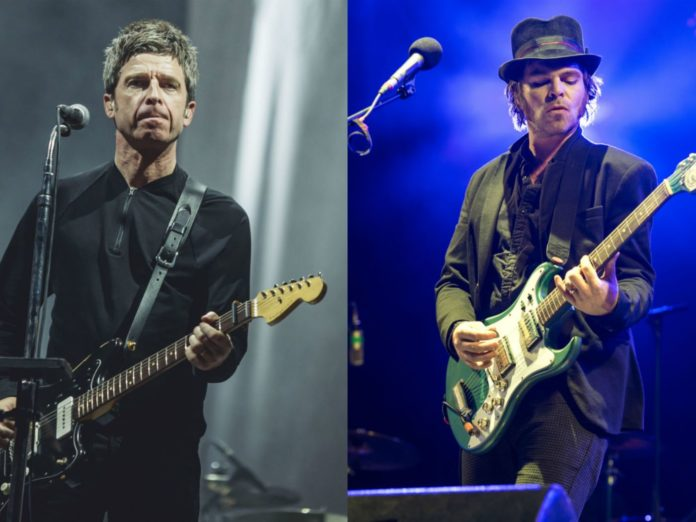

Noel Gallagher and Supergrass announced as Bristol Sounds 2020 headliners

Noel Gallagher’s High Flying Birds and Supergrass have been named among the headliners for Bristol Sounds 2020.
The outdoor concert series will return to the city’s Harbourside from June 23-28 next year following a successful 2019 season, which saw performances from the likes of Bloc Party, Elbow and The Cinematic Orchestra.
Bristol Sounds have this morning (November 25) confirmed their first set of headliners for their 2020 event, which will again take place at Canons Marsh Amphitheatre in the centre of Bristol. Gallagher will perform on June 24 with support from Confidence Man, while the recently reunited Supergrass will headline on the following night (June 25).
The Levellers are curating and headlining their own ‘A Beautiful Day Out’ gig on June 27, while Jack Savoretti will close Bristol Sounds on June 28 with a headline performance. You can see today’s line-up announcement below.